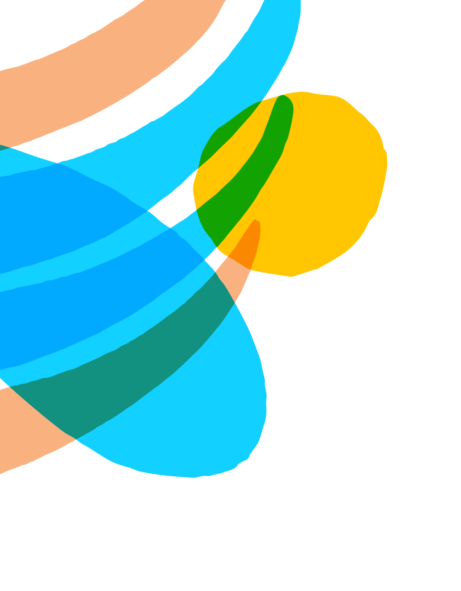

<div class="voc-sabia-polo-mooca">
    <div class="div">
      <div class="overlap">
        <div class="overlap-group">
          <div class="group">
            <div class="overlap-group-2">
              <div class="voc">VOCÊ</div>
              <div class="sabia">SABIA?</div>
            </div>
          </div>
          <p class="a-atual-identidade">
            A atual identidade paulista pode ser compreendida pela preservação da história e memórias das pessoas que
            chegaram ao Brasil por meio da Hospedaria de Imigrantes do Brás no passado.&nbsp;&nbsp;<br /><br />O Museu
            da Imigração do Estado de São Paulo preserva a história das pessoas que chegaram
          </p>
          
        </div>
        <div class="overlap-2">
           
        </div>
        <div class="rectangle-wrapper"><div class="rectangle"></div></div>
      </div>
      <div class="vector-wrapper"></div>
      
      
      
      <div class="img-wrapper"></div>
    </div>
</div>
